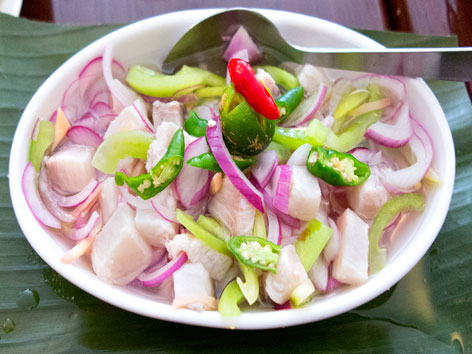

Noypi Cuisine
Home
About
Recipes
Contact
Kilawin

Ingredients:
500 grams fresh fish (tuna, tanigue), cubed
1 cup vinegar
1 medium red onion, chopped
4 cloves garlic, minced
2 thumb-sized ginger, minced
2 pieces red chili, chopped
1/4 cup calamansi juice
Salt and pepper to taste
Method:
Step 1 - Marinate the fish
In a bowl, combine the fish cubes and vinegar. Let it sit for 10 minutes, then drain.
Step 2 - Add the aromatics
Add onion, garlic, ginger, and red chili to the fish. Mix well.
Step 3 - Season
Pour calamansi juice over the mixture. Season with salt and pepper to taste.
Step 4 - Chill
Let it chill in the refrigerator for at least 1 hour to allow flavors to meld.
Step 5 - Serve
Serve cold as an appetizer or side dish. Enjoy your Kilawin!